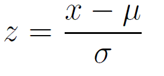
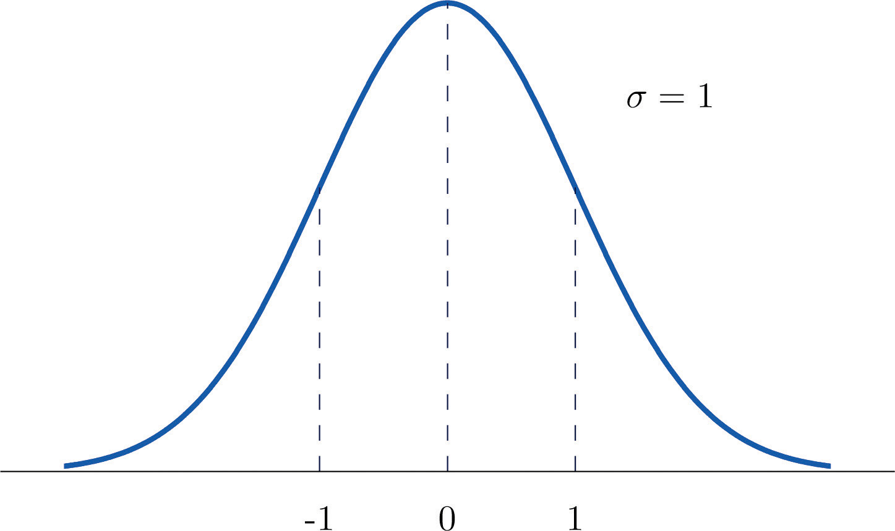
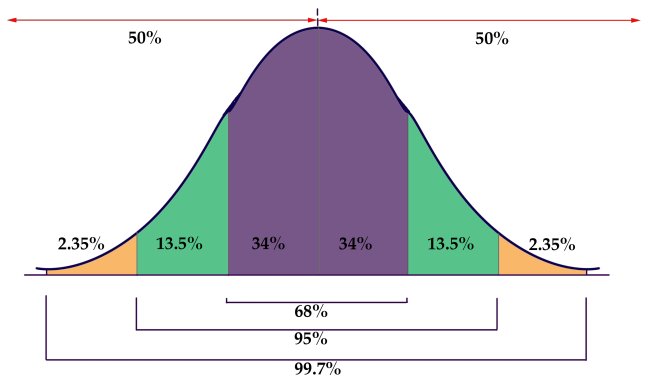
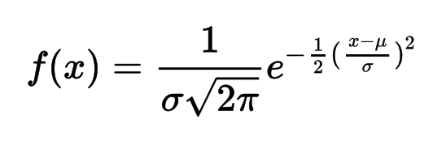
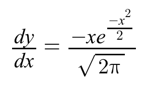
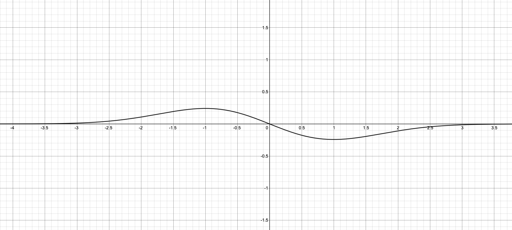

2 January 2022 Z-Scores and Normal Distributions The beautiful relationship between density curves and probability… A z-score is a statistic that describes how far a data value is from the mean, in terms of the standard deviation. Z-scores can only be computed when the distribution of the data is normal or approximately normal. This assumption is key, because if the distribution of the data set was heavily skewed, then the calculations would be inaccurate, as the areas of the proportions under the distribution curve would not be the same as the respective areas under a normal distribution. The calculation of a z-score is simple. Using the mean, standard deviation, and the data value of interest, you can find its z-score. If the z-score is positive, then the data value is greater than the mean. If the z-score is negative, the data value is lesser than the mean. Here is the z-score formula, where x represents the value of interest, μ is the mean, σ is the standard deviation, and z is the z-score:  What if you wanted to calculatate the probability of a definite z-score? First, we need to know how z-score probabilities are calculated, using a normal distribution which is shown below.  Firstly, it is important to note that the area under a normal distribution is always 1, which corresponds to the maximum value that any probability can have. Probabilities are represented in a normal distribution by the “areas” under the curve. Why I mention “areas” is because it depends on which section of the total area under the curve is of interest. For instance, one section could be from when z = -1 to z = 1, so essentially an interval of z-scores. This is why the probabilities of discrete z-scores are 0, as the “z-dimension,” on the z-score axis, of the area needs to have a defined value in terms of z’s. Another way to visualize this idea is when you have a rectangle with side lengths, a and b. If a is kept constant and the value of b approaches 0, then the area of the rectangle approaches 0. The same logic applies to a normal distribution. Considering a section of area, as the “z-dimension” approaches 0 between two selected z-scores, the probability of the approached z-score tends to 0. Applications of this idea of a continuum are seen in the topic of continous random variables. One interesting thing about the areas under a normal distribution is that there is a rule for the areas within three standard deviations from the mean. This is called the 68-95-99.7 rule. To elaborate, 68% of the data lie within one standard deviation from the mean, 95% of the data lie within two standard deviations from the mean, and 99.7% of the data lie within three standard deviations from the mean. Here is a visual representation of this rule:  I’d also like to mention the end behaviors of a normal distribution. Actually, the z-scores approach infinity when z is positive, and to negative infinity when z is negative. Let some function h(z) represent the graph of a normal distribution on a Cartesian plane. This scenario can be described by the following limits: This truly fascinates me, as the ideas of elementary calculus can be used to describe statistical phenomena! In essence, the z-score axis is a horizontal asymptote of the h(z) funcion. As you may have noticed, I’ve mentioned “a normal distribution” but never “the normal distribution.” This is because, the shape of the normal distribution can vary on the value of the standard deviation. The greater the standard deviation, the wider the distribution appears, and the smaller the standard deviation, the skinnier the distribution appears. In addition, normal distributions can vary with respect to the mean. Although the shape of two normal distributions might be the same, they might be in different locations along the z-score axis, since each distribution’s μ-value creates its own z-score of reflection. I was doing a bit of resarch to see if there was a mathematical function that could generate the graph of a normal distribution depending on the value of the mean (μ) and standard deviation (σ), and indeed there is! Here is the function, f(x), where f represents the height of the normal distribution curve, and where x essentially represents the z-score.  This is better known as the probability density function. What’s neat about this function is that it allows you enter in the values of μ and σ, in order to accurately generate the distribution graph. Another interesting thing is that if you look at the probability density function, z can be substituted in for the (x - μ) / σ. Then, f is just a function of a z-score!. This is very useful when computing probabilities of z-score intervals, since you can use integral calculus to find the area under the curve bounded by two selected z-scores. Here’s another thing I’d like to throw out. Suppose you take the derivative of the probability density function with respect to the only variable x (since μ and σ are constants, and are still equal to 0 and 1, respectively). This gives us the instantaneous rate function, when you plug in a value of x, shown here: let y = f(x)  This can tell us the rate at which the probability increases or decreases over a z-score interval. The graph of the derivative is shown below:  (graphed using Desmos) I have yet to find the practical applications of the graph of the derivative. I’ll leave that for another blog post :) Subscribe to CaptMD-11 Get the latest posts delivered right to your inbox Subscribe